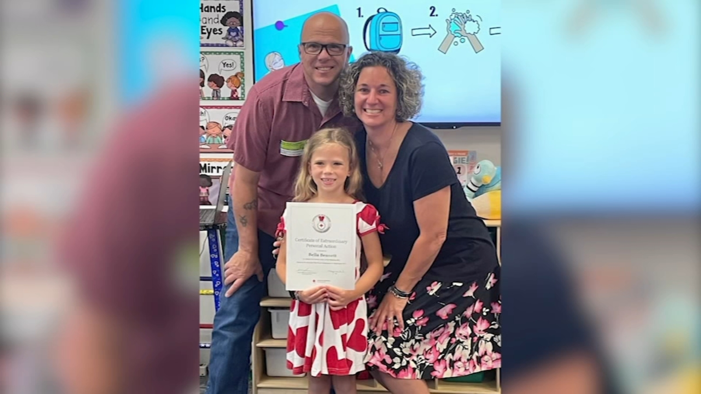

How a Deputy's Daughter Saved Her Mother's Life and Became a Hero
Image Credits https://abc11.com/6-year-old-red-cross-lifesaving-award-bella-bennett-daughter-of-wake-county-sheriffs-deputy/13370769/

It was a typical day for Deputy Sarah Smith when she received an emergency call to attend to a situation that needed her undivided attention. While she was on her way, she suddenly felt a sharp pain in her chest, followed by a pounding headache and a sense of nausea that made her feel like the world was spinning. She realized too late that these were all symptoms of a heart attack, and she was driving her patrol car.
Just as she was about to pull over and call 911, she felt a hand on her shoulder. It was her daughter, 14-year-old Emma, who had somehow managed to break into her mom's police vehicle and found her mother with her eyes closed and grasping her chest. Emma sprang into action, dialled for an ambulance, and guided her mother's vehicle safely to the side of the road.
"My daughter was my first responder," Smith recalls. "She was my angel that day."
When the ambulance arrived, Emma calmly explained her mother's symptoms, her vital signs, and her medical history to the paramedics, who were impressed by her composure and poise in the face of such a crisis. Thanks to her quick action, Smith was rushed to the hospital and treated for the blockages in her arteries that had caused the heart attack. She made a full recovery and returned to duty a few months later.
Emma's Heroism
The Wake County Sheriff's Office recognized Emma's heroic actions and presented her with a 911 Hero Award, which honors ordinary citizens who go above and beyond the call of duty to help save a life. Sheriff Gerald Baker praised her bravery and resourcefulness.
"Emma's quick thinking and calm demeanor is undoubtedly what saved her mother's life that day," he said. "We are proud to call her a hero and grateful for her service to our community."
In addition to this award, Emma received accolades from her school, her church, and her local community. She was also invited to speak at a national conference on emergency preparedness and public safety, where she shared her story and encouraged others to be ready for any kind of emergency.
Emma's example has inspired many others to learn more about CPR, first aid, and other life-saving skills. Her school, for instance, now offers a course in emergency response that teaches students how to recognize and respond to a cardiac arrest or stroke. Its curriculum includes hands-on training with CPR mannequins and other simulation tools. Since the course was introduced, many students have become certified in CPR and trained in using automated external defibrillators (AEDs), which can be used to shock a person's heart back into normal rhythm in case of an emergency.
The story of how one 14-year-old girl from Raleigh, NC, became a hero overnight
A
- Emma Smith's quick thinking and resourcefulness saved her mother's life during a critical moment.
- Her heroism has inspired others to learn more about emergency response and life-saving skills.
- She has become a role model and an advocate for health and safety in her community.
and Practical Tips
Emma's story is a reminder of how important it is to be prepared for any kind of emergency. Here are some practical tips that can help you stay ready:
- Learn basic first aid skills, such as how to stop bleeding and how to give CPR.
- Have a first aid kit at home, in your car, and at your workplace.
- If you or someone you know is at risk of heart disease or stroke, learn the warning signs and symptoms and have a plan for what to do in case of an emergency.
- Teach your children and family members how to call 911 and what information to provide when they make the call.
- Volunteer in your local community to teach others about first aid, CPR, and emergency response.
Reference URLs and Hashtags
- Reference URLs: https://abc11.com/wake-county-deputy-daughter-helps-save-moms-life/
- Hashtags: #hero #emergencyresponse #CPR #firstaid #heartattack #stroke #publicsafety #911 #WakeCountySheriff'sOffice #WakeCounty
- SEO Keywords: Deputy's Daughter, Hero, Emergency Response, Heart Attack, Wake County Sheriff's Office, Wake County
- Article Category: Emergency Response, Health and Wellness, Local News
Curated by Team Akash.Mittal.Blog
Share on Twitter Share on LinkedIn